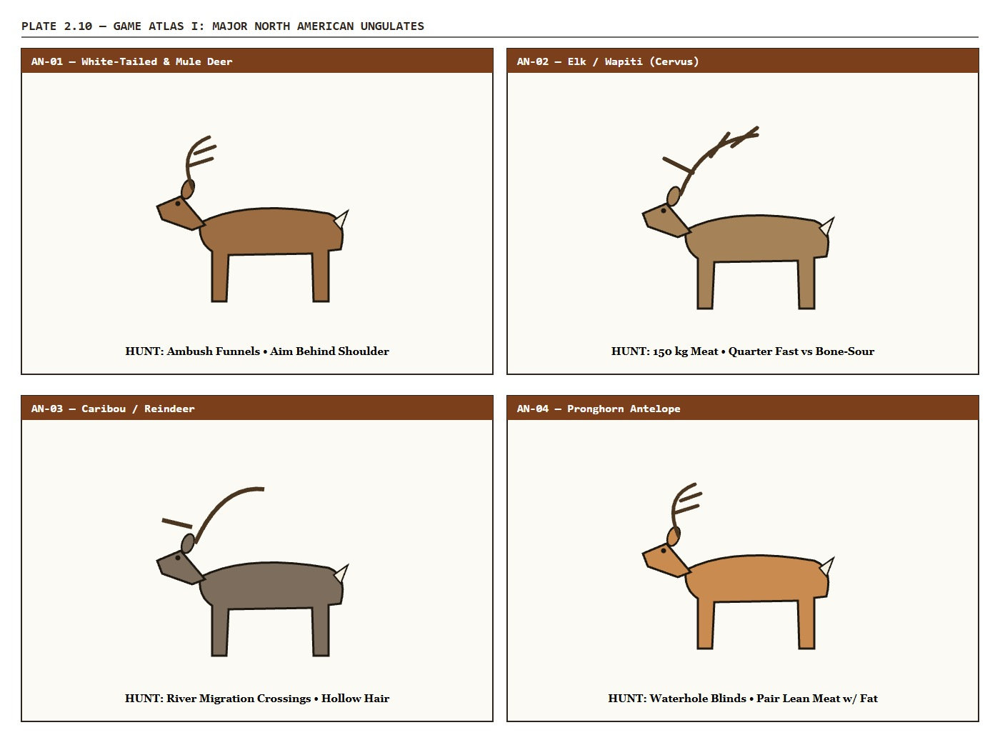

Post-Collapse Urban & Suburban Scavenging Operations
Time-Phased Salvage Protocols for Retail, Hardware, Sporting & Industrial Nodes
In the first hours and weeks following grid collapse, industrial supply chains freeze instantaneously while modern buildings begin a rapid thermal and biological decay cycle. Unrefrigerated meat spoils within 24–48 hours; municipal water pressure fails within hours to days depending on gravity towers; fires go unchecked; and surface retail shelves are stripped quickly by crowds fixated on obvious convenience items. Survival hinges on disciplined time-phasing, prioritizing calorie-per-pound density, avoiding spoiled-food traps, and knowing where high-value restoration materials hide behind locked retail backrooms and trade yards.



PHASE 1: HOURS 0–72 (THE FLASH WINDOW) — Hydration, Fire, Trauma Meds & High-Density Carryables
- Secure water before pipes depressurize: drain building water heaters (40–80 gal clean reserve via bottom drain valve), toilet upper tanks (never bowls), and commercial rooftop storage cisterns.
- Bypass front-aisle snack panic; target pharmacies, hardware tool cribs, water filtration media, headlamps, heavy tarps, and wool/synthetic cold-weather layers.
- Establish zero-light discipline at night and travel off primary arterial boulevards using utility easements, greenbelts, and rail corridors.
PHASE 2: DAYS 4–28 (COLD-CHAIN COLLAPSE & BACKROOM SALVAGE) — Bulk Dry Staples, Fasteners, Plumbing, Seeds & Salvage Metallurgy
- Avoid all thawed freezer/refrigerator sections once ambient temperatures climb; anaerobic botulism and clostridial rot begin silently inside sealed plastic meat trays.
- Penetrate grocery warehouse stockrooms, bakery ingredient bays, and restaurant supply depots for 50-lb sacks of white rice, dried beans, salt, honey buckets, and steel-canned fats.
- Strip auto-parts stores, agricultural feed co-ops, and lumberyards before roof leaks or arson fires compromise stored stock.
PHASE 3: MONTHS 2+ (LONG-TERM INFRASTRUCTURE & FEEDSTOCK HARVEST) — Spring Steel, Copper Windings, Alternators, Glass Jars & Heavy Timber
- Transition away from urban cores toward rural homestead zones, waterways, and intact watershed timber.
- Harvest heavy salvage from auto salvage yards (5160 leaf springs for axes/knives, alternators for hydro/wind micro-grids, deep-cycle lead-acid cores, copper radiator tubing) and scrapyards.
Selected High-Priority Salvage Profiles
SCAV-01: Grocery Stores & Supermarkets (Front Aisles + Backroom Warehouses)
Most scavengers strip the middle cereal/chip aisles and abandon supermarkets once dairy rots. The true multi-year caloric wealth lies in the rear stockroom pallets, in-store bakery ingredient closets, Ethnic/International 20-lb rice & dried bean bays, and bulk canning/spice shelves.
- White Rice (20–50 lb bags) & Rolled Oats (International Aisle / Backroom Pallet): 3,600 kcal/kg; white rice keeps 10–30 years dry (brown rice spoils in 6 months from bran oils).
- Dried Beans, Lentils & Split Peas (Dry Goods / Bulk Bins): Complete protein paired with rice; viable seed stock for planting if un-irradiated.
- Pure Honey, White Sugar & Molasses (Baking Aisle / In-Store Bakery): Infinite shelf life; honey acts as antimicrobial burn/wound dressing; sugar powers ORS hydration.
- Refined Coconut Oil, Lard, Tallow & Olive Oil (Baking / Butcher Backroom): 9,000 kcal/kg lipid density; critical for tallow lamps, soap, and preventing rabbit starvation.
Avoid Traps: Avoid thawed deli meats, swollen/rusted cans, rancid whole-grain brown rice/whole-wheat flour after 6 months, and 'splash-less' or scented bleaches (toxic surfactants—poisonous if added to drinking water).
SCAV-02: Convenience Stores, Gas Stations & Truck Stops
Small, rapidly ransacked, yet packed behind the clerk counter and inside truck-stop travel bays with high-leverage fire, water, medical, and barter items missed by people grabbing soda and chips.
- BIC-Style Butane Lighters & Strike-Anywhere Matches (Behind Clerk Counter / Endcaps): Unbeatable fire-starting efficiency; high-value post-collapse barter currency.
- Peanut Butter, Mixed Nuts, Beef Jerky & Pemmican/Meal Bars (Snack & Breakfast Racks): 5,500–6,000 kcal/kg zero-cook travel rations rich in fats and salt.
- Instant Coffee, Tea, Electrolyte Packets & Glucose Tablets (Beverage / Counter Racks): Morale, mild stimulant alertness, and emergency hypoglycemia/ORS recovery.
- OTC Meds: Loperamide, Ibuprofen, Benadryl, Triple-Antibiotic & Saline (Travel Pharmacy Pegboard): Loperamide stops fatal dehydration from diarrhea; diphenhydramine counters anaphylaxis.
Avoid Traps: Do not drink stale open fountain-syrup lines or waste pack weight on carbonated sugary sodas, glass beer bottles, or perishable roller-grill food.
SCAV-03: Hardware Stores, Lumberyards & Building Supply Centers
Hardware warehouses are the fastest shortcut from Stone Age labor back to Iron Age and Early Industrial living. Prioritize hand-powered steel tools, fasteners, sharpening stones, filtration media, and structural membranes over battery tools whose lithium packs will soon die.
- Felling Axes, Hatchets, Splitting Mauls, Bow Saws & Replacement Blades (Lawn & Hand Tool Aisles): Saves hundreds of hours over stone axes for firewood, cabins, and charcoal kilns.
- Bastard Mill Files, Cold Chisels, Hacksaw Blades & Sharpening Stones (Metalworking / Tool Crib): Impossible to hand-craft early on; maintains every cutting edge and shapes leaf springs.
- Hand Brace & Auger Bits, Post-Hole Diggers, Spades & Mattocks (Carpentry & Excavation): Essential for mortise-and-tenon timber joinery, root cellars, and dugout shelters.
- Heavy Poly Tarps, 6-mil Vapor Barrier Plastic & Galvanized Roofing Nails (Lumber / Fastener Aisles): Instant waterproof shelter roofs, solar stills, and long-term structural fasteners.
Avoid Traps: Skip heavy corded power tools unless you already have a running generator; avoid pressure-treated green CCA/ACQ lumber for cooking fires or raised vegetable beds (toxic arsenic/copper leachates).
End of Part I Free Web Preview. The full 156-page codex includes Parts II–VII: Wild Edibles & Deadly Lookalikes Atlas, Primitive Hunting/Preservation, Trauma First Aid, Shelters & 70-Jurisdiction State/Province Guides, and Iron Smelting / 12V Hydro Reconstruction.